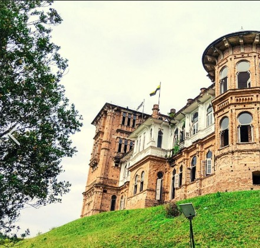
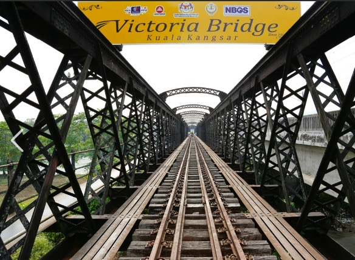

Famous Destination in Perak
TOP 2 DESTINATION
Customer Satisfaction Rate
Reservation Progress Bar
TEMPAT MENARIK DI PERAK
Location:
Kellie's Castle
|
Victoria Bridge
Our Activities
These are the top 3 interesting places to visit in Perak

KELLY CASTLE

VICTORIA BRIDGE